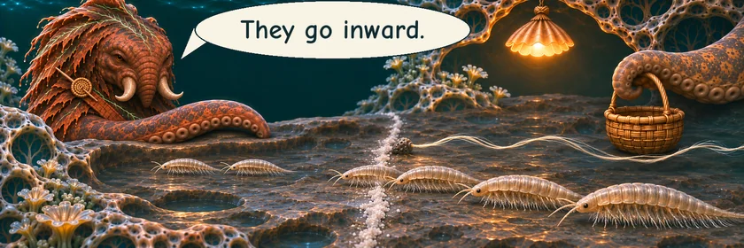
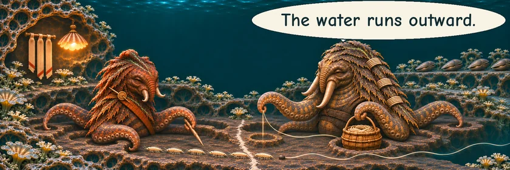
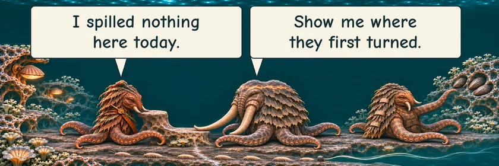
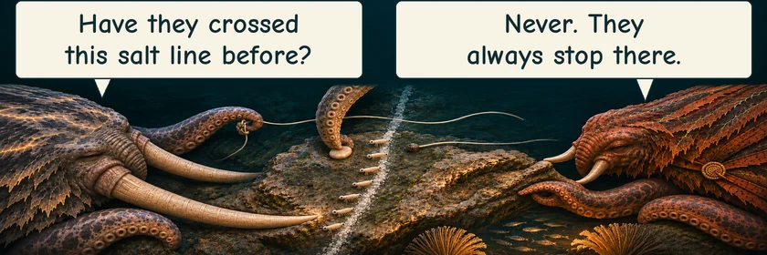
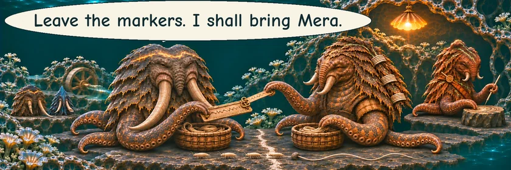

THE ORUUN · TEN YEARS BEFORE HUMANITY AWAKENS
Against the Water
Tesh has watched the little grazers often enough to notice when they change their way.
TESH · Reef learnerHER MOTHER · Reef tenderSELN · Road examiner





She cannot yet say why they turned. She leaves the markers where the others can look.
Read the words
They go inward.
The water runs outward.
I spilled nothing here today.
Show me where they first turned.
Have they crossed this salt line before?
Never. They always stop there.
Leave the markers. I shall bring Mera.